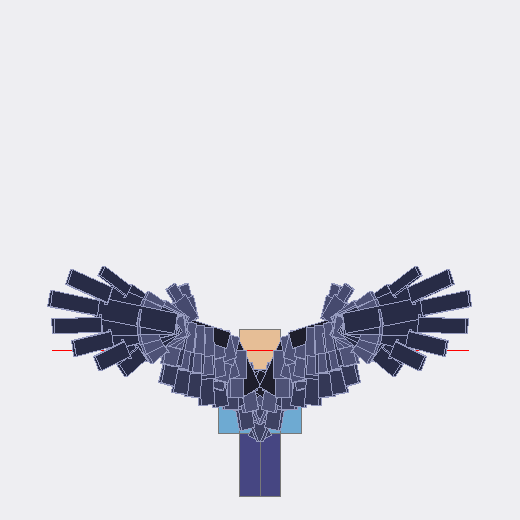
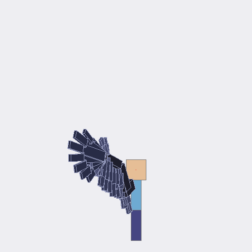
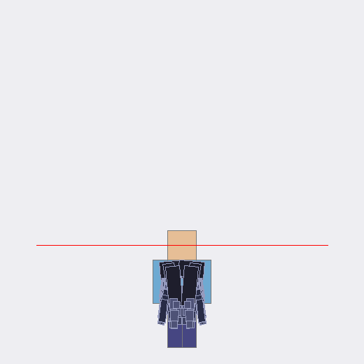
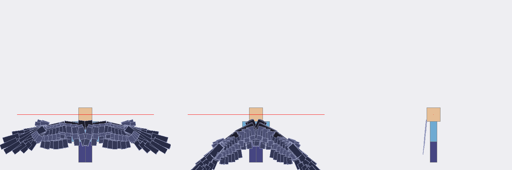

Gölgesi görünen kanatlar, bu kez 3B.
Supernatural'dan esinlenen, 150 küp ve 81 kemikten oluşan melek kanadı modeli. Karşınızdaki dosyanın kendisi: sürükleyin, döndürün, açıp kapatın.
open animasyonu · 1,3 sn
Sırttan açılır.
Önce hiçbir şey yok: kanat sırtta, ölçeği sıfıra yakın.
Tüyler içten dışa belirir, kanat omuzdan yelpaze gibi açılır.
Hafif aşmayla yerine oturur. Son kare, idle animasyonunun ilk karesidir.
- küp
- 150
- kemik
- 81
- animasyon
- 5
- kanat açıklığı
- ≈ 5 blok
64×64 piksel tek doku, modelin içinde gömülü. Her tüy ayrı bir kemik, bu yüzden tüyler birbirinden gecikmeli hareket eder.
Dizide kanatlar hiç 3B gösterilmedi.
Yalnızca duvara yansıyan ya da yere yanan gölge olarak görüldüler. Bu modelin tasarımı o izlerden çıkarıldı: siyah-lacivert, yırtıcı kuş tipi, çok geniş; uçları sivri primer tüyler, kol boyunca sıralı sekonder ve tertial tüyler, üstlerinde örtü tüyleri.
Omuzdan yükselip bilekte kırılan, dışa doğru yelpaze gibi açılan bir siluet. Ölçü ve renk resmî bir kaynağa dayanmıyor; bu bir yorum.
Hiçbir dizi karesi ya da resmî görsel kullanılmadı. Bu sayfadaki her şey modelin kendisi ve onun önizleme çizimleridir.
Beş animasyon, tek akış.
Önerilen sıra: open → (idle | hover | fly) → close → modeli kaldır.
Bir satıra basınca yukarıdaki görüntüleyicide o animasyon oynar.
Çizim önizlemeleri
Aracın kendi kinematiğiyle çizilen düz önizlemeler (Blockbench ekran görüntüsü değildir). Yukarıdaki 3B görünüm ise modelin gerçek dosyasından üretilir.



Süzülürken kamerayı kapatmaz.
Birinci şahıs süzülmede kanat ekranın yalnızca ince bir kenar çizgisini kaplar: görüş açısı 70 / 90 / 110 için sırasıyla %2,1 / %1,8 / %1,6. İlk denenen çırpışta bu oran %27 idi.
Hesap, kameranın ayak noktasından yaklaşık 0,4 blok yukarıda olduğu kabulüne dayanır; bu değer kaynaklarda doğrulanamadı. Ayrıntı depodaki README'de.
İndir
İçinde: .bbmodel (model + animasyon + gömülü doku), angel_wings.png, önizlemeler, üreten betikler, README ve lisans.
- Blockbench'i açın (ücretsiz, blockbench.net).
- File > Open Model ile
supernatural_angel_wings.bbmodeldosyasını seçin. - Animation sekmesinden
open,idle,hover,fly,closeanimasyonlarını oynatın. - Paper eklentisi için dosyayı BetterModel'e verin (aşağıdaki duruma bakın).
Dürüst durum
Yapıldı
- Geometri ve animasyonlar Blockbench MCP ile canlı projede uygulandı; ölçülen sınırlar betikteki kinematikle ±0,01 px eşleşti.
arac/verify.mjs:openson karesi = dinlenme pozu,closeilk karesi = dinlenme pozu, kapalı poz sırt gövdesinin içinde.
Denenmedi
.bbmodeldosyası betikle yazıldı; Blockbench'te elle açılıp sınanmadı. Sorun görürseniz bildirin.- BetterModel (Paper, Java) ile bu dosya denenmedi.
- Bedrock / Geyser desteği denenmedi.
- Model Java blok sınırını (-16…32) aşıyor (açıklık 82 px); motorun büyük modeli nasıl böldüğü sınanmalı.